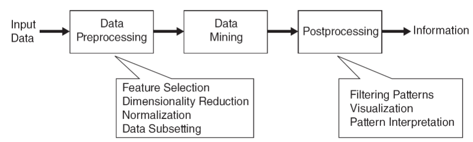
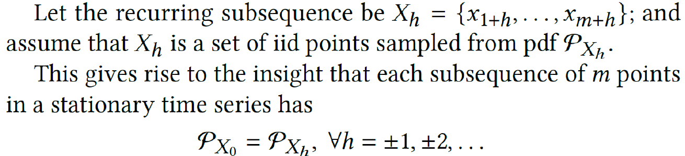
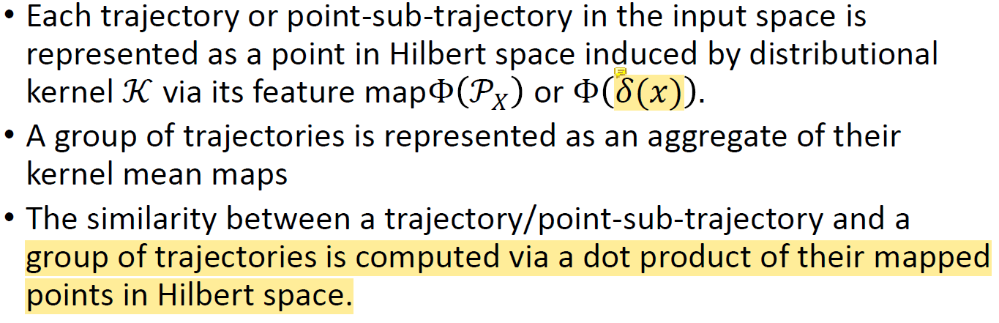
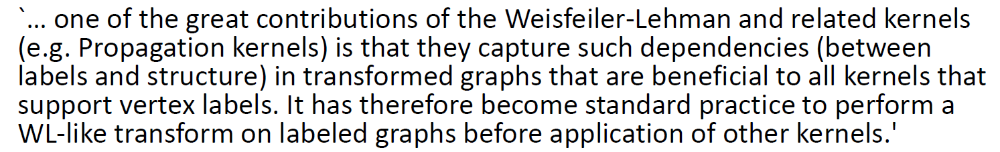
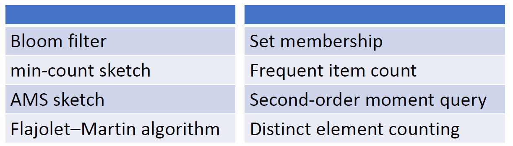

Classification and regression methods are usually described as supervised learning methods. Explain why. And describe the difference between the two.
A: Rely on labeled dataset to build predictive models(the input data (features) and the corresponding correct output (labels) are known).
Difference: deals with categorical (discrete) outputs or continuous outputs.
What do you need in order to produce a classification model?
How do you know that you have produced a good model?
A: Good performence on metrics(Acc, F1-score, recall); generalizes well(test data); balance between bias and variance; satisfies the requirement.
Why is a classification model also called a generalized model?
A: Generalize from train data by learning the pattern and can classfy the unseen data; Avoid overfitting, validation data make sure it captures the underlying data distribution rather than remember the train data. Good performence on new data.
Explain how a clustering task differs from a classification task.
A: supervised & unsupervised learning;
produces clusters of similar data points & produces specific category labels for each data.
Discover inherent structure and patterns in the data & Predict correct label for new data.
What is the core operation/measurement required in a clustering task?
A: distance measurement.
How do you know that you have produced a good clustering outcome?
A: NMI, ARI(ground truth is available) or DI measure; Expert validation and outcome is meaningful.
Explain how an anomaly detection task differs from a classification task and a clustering task.
A: Unsupervised & supervised; Imbalanced & balanced dataset; focuses on finding rare instances within data (without clear label) & categorize data into specific, known classes.
A: Focus on unusual data points & groups hole datasets into clusters; Provide a score whether normal or anomaly & assign each data to a cluster.
similarity: unsupervised, based on similarity measure; helping to understand dataset; algorithm overleap: DBSCAN.
How do you know that you have produced a good anomaly detection outcome?
A: F1-score: balance precission and recall; AUC-ROC: (TPR-FPR) Measures the model's ability to distinguish between normal and anomalous points.
How does association pattern mining differ from other data mining tasks?
A: foucus on association between items; sparse binary database(transaction data); Metrics: support, confidence
How does association pattern mining differ from rule-based classification?
A: describe relationship between items & generate rules to map input feature to class; apriori & decision tree; Evaluation metrics.
Chapter 2
SVD and PCA are extraordinarily useful because matrix and linear algebra operations are everywhere in data mining. SVD and PCA make such matrix operations easier by providing convenient decompositions and basis representations.
What is the attribute type of each of the following kinds of attributes (a)Age, (b) Salary, (c) Zip Code, (d) Province of Residence, (e) Height, (f) Weight.
An analyst sets up a sensor network in order to measure the temperature of different locations over a period. What is the data type of the data collected?
A: Time series, numerical.
An analyst processes Web logs in order to create records with the ordering information for Web page accesses from different users. What is the type of this data?
A: Ordinal
Describe the difference between interval and ratio attribute type.
A:Interval: do not have a true zero point; addition and subtraction are meaningful & multiplication and division are meaningless. (calendar) Ratio: has a true zero point; addition, subtraction,multiplication, division are meaningful.(height, weight, age)
Suppose that you are employed as a data mining consultant for an Internet search engine company. Describe how data mining can help the company by giving specific examples of how techniques, such as clustering, classification, association rule mining, and anomaly detection can be applied.
A: clustering: User segmentation to give personalized search experience; classification: spam dectation; association rule mining: advertising. anomaly dection: system performance monitoring.
Distinguish between noise and outliers. Be sure to consider the following questions.
(a) Is noise ever interesting or desirable? Outliers?
(b) Can noise objects be outliers?
(c) Are noise objects always outliers?
(d) Are outliers always noise objects?
(e) Can noise make a typical value into an unusual one, or vice versa?
A: Noise is undesirable obscure the true pattern. Outliers can be interesting and provide valuable insights. Noise can be outliers deviate significantly from other data. Not always. No, they can be significant observations. Both yes, after adding a noise, typical can be unusual and vice versa.
The following attributes are measured for members of a herd of Asian elephants: weight, height, tusk length, trunk length, and ear area. Based on these measurements, what sort of similarity measure would you use to compare or group these elephants? Justify your answer and explain any special circumstances.
A: Euclidean distance because it considers differences across all dimensions simultaneously. Need preprocess such as normalization.
Discuss why a document-term matrix is an example of a data set that has asymmetric discrete or asymmetric continuous features.
A: Terms occur differently across documents. Only presence (a non-zero attribute value) is regarded as important.
Suppose that you had a set of arbitrary objects of different types representing different characteristics of widgets. A domain expert gave you the similarity value between every pair of objects. How would you convert these objects into a multidimensional data set?
A: construct similarity matrix, use multidimentional scaling(MDS).
Consider the time-series 1, 1, 3, 3, 3, 3, 1, 1. Perform wavelet decomposition of the time series. How many coefficients of the series are non-zero?
A:
Suppose that you had a data set, such that each data point corresponds to sea surface temperatures over a square mile of resolution 10 × 10. In other words, each data record contains a 10 ×10 grid of temperature values with spatial locations. You also have some text associated with each 10 × 10 grid. How would you convert this data into a multidimensional data set?
A: Flatten the grid to 100-dimensional vector; Word2Vec embedding algo; concatenate them.
Suppose that you had a set of discrete biological protein sequences, which are annotated with text describing the properties of the protein. How would you create a multidimensional representation from this heterogeneous data set?
A: Sequence encoding; text annotation processing by NLP algo; combine them; dimension reduction.
Apart from the assumption that the specified distance matrix is Euclidean, what is the assumption of using Multidimensional Scaling (MDS) in converting a graph to multidimensional representation?
Hint: The violation of the assumption will not allow MDS to convert a graph.
A: Must be a Fully connected graph
What is the assumption of spectral methods?
A: underlying cluster structure and can captured by eigenvalue of similarity or laplacian matrix; graph representation; eigengap; lies on a low-dimensional manifold.
Describe how you would perform clustering using spectral clustering if the dataset is in
a. Multidimensional representation
b. Time series
c. Graphs
A: similarity matrix(k-nn), laplacian matrix(L=D−A), eign decomposition, form embedding, clusteri(k-means)
MDS methods are designed for preserving global distances; and spectral methods are designed for preserving local distances. Explain the meanings of global distances and local distances in this context.
A: distance between points that are far apart the origin space & close to each other in origin space; preserve the overall geomatric structure & maintaining the relationships among the nearby points.

Chapter 3
Data independent distance must take local data distribution into consideration via some methods in order to do well in practice.
The problem of distance/similarity function design is a crucial one in the context of data mining applications.
Recommend to use a data dependent similarity rather than data independent distance/kernel, especially in datasets with varied densities.
Explain the reason why existing distance measures and kernels are affected by certain types of data distributions, as explained in the textbook.
A: Purely based on the geometry position of the points in the data/input space, independent of data distribution.
Yet, many algorithms which employ these measures have no issues in these data distribution, e.g., k-nearest neighbor classifier, SVM and DBSCAN. Explain the reason why.
A: Only cares about neighbors. Won't consider the global distance.
A generic method for local distance computation is given as follows:
a. Partition the data into a set of local regions (use a clustering method)
b. For any pair of objects, determine the most relevant region for the pair, and compute the pairwise distances using the local statistics of that region. For example, the local Mahalanobis distance may be used in each local region.
Discuss the issues with this method.
Suggest one or more alternatives. Explain the reason why these alternatives are better.
A: It need a cluster algotithm, the performance depends on the algorithm you choose. The efficiency may be low. Use IDK for the same purpose.
How would you choose an algorithm (or design an algorithm) for a data mining task at hand? The task could be any of the following: classification, clustering or anomaly detection. Discuss the issues you would consider in a sequential order.
A: Understand the problem: know what you want and how data looks like; Data preprocessing: cleaning, feature engineering, normalization; Algorithm selection: task type, similarity measures, classic algo first; trade-off between model complexity and performance; Evaluation method and validation; Hyperparameter fine tuning
Derive the mathematical relationship between cosine similarity and Euclidean distance when each data object has an L2 length of 1.
A:Euclidean(x,y)=2−2∗cosine(x,y)
Explain the similarity measure you will use to measure flight paths of many migratory birds in a dataset in order to find the most similar flight paths. Name the data type of this dataset.
A: Spatio-temporal data. Dynamic time warping. DTW effectively handles variations in timing and speed, ensuring accurate alignment and comparison of the spatial flight paths of migratory birds.
Explain the criteria you would use to choose a distance/similarity measure and provide the reason(s) of these choices.
A: Data type; perforcemance on dataset; dimensionality: cosine or euclidean; attribute relationship: mahalanobis distance consider correlation.
What makes a complex data object complex?
A: Usually not i.i.d. Exhibit high dimensionality, diverse attribute types, dependencies between attributes, temporal dynamics, graph representations.
As the complexity of a data object increases, the choice of a distance/similarity measure increases. Explain the reason of this phenomenon.
A: brings in a variety of attributes(high dimensionality), relationships, and structures(graph) that need to be accounted for in measuring distance or similarity. Traditional measures might not capture the nuances of complex data properly,
When do we need to measure similarity between (a) two nodes; and (b) two graphs?
A: Social networks: community detection; Recommendation systems; & Graph evolution analysis; subgraph matching; overall structure.
Isolation Kernel
Compare with the generic method for local distance computation, described on page 73 in Aggarwal, Chapter 3:
a. Partition the data into a set of local regions (use a clustering method)
b. For any pair of objects, determine the most relevant region for the pair, and compute the pairwise distances using the local statistics of that region. For example, the local Mahalanobis distance may be used in each local region.
Describe its similarities and differences with Isolation Kernel.
A: Both wants to participate the space into many local regions while the generic method use clustering method and IK use isolating space partitioning mechanism (nearset neighbor, isolation-tree, hypersphere). IK is faster and has a better performance.
Discuss how Isolation Kernel deal with the issues of data distribution described on pages 69-73 in Aggarwal, Chapter 3.
A: In IK, two points of equal inter-point distance are less similar in dense reigon than in sparse reigon.
Chapter 4
Explain the similarities and differences between the main classification methods.
A: ability to handle binary or multiclass classification tasks and their foundational concepts (e.g., learning from data, finding patterns).
Decision tree(intuitive, overfitting), SVM(high-dimension), K-NN(lazy learning, non-parametric), neural network(large data). model complexity, interpretability, computational requirements, handling of overfitting
Explain why the divide-and-conquer algorithm used to generate a decision rule is called a greedy algorithm.
A: Immediate Gain: The choice is made to maximize immediate benefits; Local optimization by criteria like information gain. No backtracking.
The set-covering algorithm used to generate decision rules is sometimes called the separate-and-conquer algorithm. How does this differ conceptually from the divide-and-conquer algorithm?
A: Generates rules sequentially, each covering different parts of the dataset. & Recursively splits the data into subsets to form a tree structure.
As the k-nearest neighbor algorithm does nothing in training, does it produce a generalized model that enables it to classify well on unseen data points?
A: if the training data can represent the potential data distribution and distance metric and parameter K are important.
Explain the distinct features of SVM with respect to other classification methods.
A: can apply kernel trick easily, model only depends on support vectors, good performance in high dimensional space.
Which of the four classification algorithms require a distance/similarity function?
A: K-NN.
Describe the two key steps in k-means clustering.
A: 1. For each data point, calculate the distance to each cluster and assign the point to the nearest cluster; 2. For each cluster, calculate the mean of all data assigned to that cluster and update the cluster by the mean value. Terminates until cluster center do not change.
Describe the two key steps in DBSCAN.
A: 1. For each data point, count the number of points within the radius ϵ. If the number is at least MinPts, the point is classified as a core point; 2. Form clusters by connecting core points and their neighbors, recursively add all directly density-reachable point until no more points can be added.
Describe the three key steps in Spectral clustering.
A: 1. Construct similarity graph: represent dataset as graph by k-NN to determine edges and weight and calculate similarity graph. 2. eigen-decomposition on Laplacian matrix and map each point into new space represented by k eigenvectors. 3. Do further clustering by k-means.
Describe the operational principle of
Distance-based anomaly detector.
Isolation-based anomaly detector.
IDK-based anomaly detector.
A: 1. Calculate distance; score data point by its distance to nearest neighbor. 2. build isolation tree, ensemble them into isolation forest. the nodes that closer to root are more likely to be anomaly. 3. calculate KME between distribution and Dirac measure, if socre is low its anomaly corresponding to given dataset.
Is an Isolation tree a variant of decision tree? Explain your answer.
A: No, Isolation tree doesn't need label, a unsupervised algorithm for anomaly detection. type of binary tree structure used for anomaly detection. It recursively partitioning the feature space into subsets until each instance is isolated in its own leaf node, the anomaly is closer to the root.
Explain another possible way to perform isolation which is different from using isolation trees. Hint: the principle is to isolate one point from the rest of the points in a sample.
A: Nearest neighbor partitioning(Voronoi Diagram) and hypersphere partitioning.
Describe the important concepts in enumeration tree algorithms.
A: Frequent Itemsets: sets of items that appear together in a transaction database with a frequency; Enumerate tree structure: root(null), node: item set, Leaves: represent the maximal frequent itemsets; Pruning: prun itemset if any subset is not frequent; Downward closure property: subset of a frequent itemset also frequent.
The aim of an enumeration tree algorithm is to have a systematic exploration of the candidate patterns in a non-repetitive way.
Why is “non-repetitive” an important criterion?
Why is “systematic” an important criterion?
A: high efficiency; search all the space rather than random search.
Given a multidimensional dataset, you are consulted as a data mining consultant to explore ways to extract interesting information from this dataset. Explain which algorithm(s) you will use and why.
A: Clustering(K-Means, DBSCAN): indentify the natural groupings without label; PCA: visualize the high-dimension data; Classification(SVM): build predictive models. Association rule minging(apirori); Anomaly detection(isolation forest).
Can we use the data mining algorithms we have studied for a spatial (or graph) dataset? Explain your answer.
A: Clustering: DBSCAN is particularly suitable as it can find clusters of varying density and handle noise, which is common in spatial data & Spectral clustering can be effective for graph data by using the graph's Laplacian matrix to find clusters. Anomaly detection: Local Outlier Factor (LOF) can identify spatial anomalies by considering local density. Graph kernel.
Chapter 5
What is the insight and its relation with IDK?

What are the assumptions of the insight?
What are the advantages of using a distributional treatment for time series? A: Don't need consider the alignment issue.
Can you provide any disadvantages of using a distributional treatment for time series? Hint: relate to the assumption(s) of the insight.
Describe the difference between the time domain approach and the R domain approach. A: point-to-point distance, slide window A: i.i.d assumption
What are the similarity and difference between group anomaly detection and anomalous subsequence detection?
A: Both aim to identify unusual patterns in data that deviate from the norm.
What else can be done with the proposed distributional treatment in time series?
Discuss any other opportunities in using the distributional treatment. What is the key in any of these opportunities?
Chapter 6
Describe the key difference between traditional measures of trajectories and the distributional measures.
A: Uniqueness
Explain how important is the uniqueness property of a measure for trajectories.
A: Without the property, X=Y,dist(X,Y)=0 we may think they are the most similar. This is wrong.
Describe how you would use a distributional kernel to perform clustering of a dataset of trajectories. Explain in what ways the suggested method are similar to and different from 𝒦AT (in detecting anomalous trajectories from a dataset of trajectories).
A: First map each trajectory Xi∈D to a point in Hilbert space using ΦI(PXi); then we use k-means to cluster these points.
Can any distributional measures (e.g., Wasserstein distance) be used in the same way as described in (3)? If not, describe how you would use such a distributional measure to perform clustering of a dataset of trajectories.
Similarity of Trajectory & Sub-trajectary anomaly detection: (aggregate: 总计)

Chapter 7
Consider two graphs, which are cliques containing an even number 2·n nodes. Let exactly half the nodes in each graph belong to labels A and B. What are the total number of isomorphic matchings between the two graphs?
Consider two graphs, containing 2 · n nodes and n distinct labels, each occurring twice. What is the maximum number of isomorphic matchings between the two graphs?
Compute the Morgan Indices of order 1 and 2, for each node of the Acteominophen graph. How does the Morgan Index vary with the label (corresponding to chemical element)?
In general, a kernel-based method is preferred over distance-based method (e.g., in the context of classification). Explain why this is so.
A: Kernel method map the points into a higher space where the problem may have a linear boundary so we can use more efficient algorithm in new space.
Describe how a single large neighborhood graph can be constructed from a dataset of graphs in order to use spectral clustering. (Hint: the first issue you need to resolve is: how to represent a graph.)
A: Represent each graph using graph embedding or graph kernels; construct adjacency matrix based on pairwise distance; form the neighborhood graph using k-nearest neighbor; perform spectual clustering
Describe the difference between labeled (non-attributed) graphs and attributed graphs.
Graph kernels can be categorized into two kinds of feature mapping: implicit and explicit. Which category does each of Random-walk kernel, shortest path kernel and WL kernel belong? Explain your answer in relation to K(Gi,Gj)=Φ(Gi)⋅Φ(Gj)
A: Explicit: WL iteratively refines and construct feature vectors based on node label which means it compute Φ(Gi) for each node.
Implicit: Random-walk and shortest path both avoid explicit construction of feature vector by directly compute similarity K(Gi,Gj). Shortest path consider node pairs and random walk consider sequence(exponential).

Consider the three graph kernels and the generic transformational (GT) approach we have studied. Can these graph kernels be used with GT? Explain the reason why.
Why k-medoids are used instead of k-means in the graph domain?
A: K-mediods use actual data point as cluster centers makes it more robust to outliers(can effect the mean) and does not assume the data is Euclidean and the mean of all points may be meaningless in graph data.
Would kernel k-means be a valid method when a graph kernel is used to measure similarity between two graphs?
A: Depends on the graph kernel you choose, shortest path or random work can't but WL kernel can.
Given what you have learned about graph kernels, explain how you will use them to perform data mining (i.e., anomaly detection, clustering or clustering) in each of the following problems:
A dataset of small graphs
A large network
Explain the necessary ingredients in order to perform a data mining task, e.g., which graph kernel (or any graph kernel), algorithm to use, etc.
The graph kernels we have studied do not take the distribution of node vectors in an attributed network into consideration. Discuss how the distribution may be incorporated in the WL kernel.
A: Using IK to map the vector into Hilbert space, this can take the distribution into consideration.
Chapter 8

Explain what concept drift is. How does it relate to iid (independent and identically distributed)?
A: Statistical properties of the variable change overtime in unforeseen way, underlying data distribution. Concept drift drictly challenages iid because the distribution changes over time and if the change due to time-dependent factors, the independent property also does not hold.
Describe the difference between data stream and timeseries. How does concept drift in a data stream relate to timeseries?
A: Time series data is sequential data with explicit timestamps while data stream may not have an explicit time component associated with data point. Time dependency (distribution change over time).
Out of the four constraints in data streams, explain which constraints the synopsis approach addresses.
A: One pass contraint; resource constraint; massive-domain constraint
Explain how one can use microclusters to perform clustering.
A: microcluster is a summary of a subset of the data points in the stream. It maintains statistics such as the mean, number of points (weight). Continuous Update: As new data points arrive, microclusters are continuously updated to reflect the evolving distribution of data in the stream.
Clustering Process: For each incoming data point: Determine which microcluster it should belong to based on distance metrics. Update the microcluster statistics (centroid, weight) to incorporate the new point. If necessary, merge microclusters to maintain a manageable number and prevent excessive growth.
Specify whether k-means, k-medoids or DBSCAN can use microclusters to perform clustering.
A: K-means because it has the mean which is microcluater needed.
To deal with concept drift, a fixed length sliding window is often used. Discuss the merits and limitation of this approach.
A: Focus on recent patterns, memory efficiency, easy to implement; limited history context, size of the window is hard to choose, may not specify sudden drift or gradual drift.
Discuss how you may use a sketch for anomaly detection in data streams.
Discuss the disadvantage and advantage of using a sketch for anomaly detection.
A: Too simple, fast.
Explain the nature of the SENC (Classification under streaming emerging new classes) problem: is it a classification problem only? Explain your answer.
A: Do classification with data stream and it must continuously adapt to new incoming data(dynamic update). Emerging new classes, it must handle the new classes rather than fixed classes as a priori. Not just a classification, detect new class and real time processing.
Clustering is sometimes suggested as a method for outlier detection. Discuss the advantage and disadvantage of this method in comparison to outlier detection methods such as LOF (Local Outlier Factor) and Isolation Forest.
A: No advantage. Focus on the normal rather than anomaly so the performance might be worse.
The problem of streaming classification is especially challenging because of the impact of concept drift. One simple approach is to use a reservoir sample to create a concise representation of the training data. This concise representation can be used to create an offline model. If desired, a decay-based reservoir sample can be used to handle concept drift. Such an approach has the advantage that any conventional classification algorithm can be used since the challenges associated with the streaming paradigm have already been addressed at the sampling stage. Discuss the issues in using this approach.
A: Can only handle the simple concept drift. There are many different kinds of concept drift.
Chapter 9
Explain what a 2-way minimum cut problem is.
A: The 2-way minimum cut problem focuses on finding the most efficient way to split a graph into two parts by minimizing the "cost" of the edges that connect the two parts.
Why is the balancing constraint more important in community detection algorithms, as compared to multidimensional clustering algorithms? What would the unconstrained minimum 2-way cut look like in a typical real network?
A: Cut one node to get the minimum cost, vary imbalance.
Explain why the Kernighan-Lin algorithm is a local method. Does it produce balanced clusters?
Explain why the Spectral Clustering is a global method. Does it produce balanced clusters?
The last step of the Spectral Clustering procedure often employs k-means clustering. Explain why this is the clustering algorithm of choice (and not other clustering algorithms).
Must we use k-means as the final step in the Spectral Clustering procedure? Explain the impact (if any) of using a different clustering algorithm.
Describe the differences in using graph kernels to deal with a large graph versus a database of graphs.
Describe the differences in using spectral clustering to deal with a large graph versus a database of graphs.
One of the drawback of Kernighan-Lin is: random initialization. Does spectral clustering has the same drawback?
The term “spectral clustering” is a misnomer because the “spectral” component performs feature transformation only and a separate clustering algorithm must be used to perform the actual clustering. Discuss this statement (whether it is true or false, and explain your reasoning)
Can we use graph kernels for collective classification? How can we do it?
How does the graph kernel approach differ from the spectral embedding based approach for collective classification?
Chapter 10
协同过滤, contanted-based recommendation
PageRank, SimRank, HITS
Update Authority(linked by hub): A web page’s authority score is the sum of the hub scores of all pages linking to it. Update Hub: A web page’s hub score is the sum of the authority scores of all pages it links to.
There are two types of web data. Name them and describe which type of data is used for (a) ranking systems, and (b) recommender systems.
A: Web content data; Web usage data
“Content information biases the recommendation towards items described by similar keywords to what the user has seen in the past. Collaborative filtering methods work directly with the utility matrix, and can therefore avoid such bias.”
Discuss why the utility matrix can avoid such bias.
A: The utility matrix in collaborative filtering avoids the keyword bias inherent in content-based methods by:
Focusing on user interactions and behavior rather than item descriptions. Discovering latent factors that represent deeper and more complex patterns in user preferences. Providing diverse recommendations based on similarities in user behavior, not just item features. By leveraging these aspects, collaborative filtering methods can offer more varied and potentially surprising recommendations that might be missed by content-based approaches.
Describe how you would use PageRank to measure the similarity between two nodes in a graph.
A: Run two times, get the mean of steady state probability
In the bipartite graph on slide#24, what is the SimRank value between a user node and an item node? In this light, explain the weakness of the SimRank model. How would you measure node similarity in such cases?
A: Zero, they will never meet. High time complexity. PageRank.
What is the advantage of using clustering methods in recommender systems compared with methods such as collaborative filtering and content-based recommendation?
A:Efficiency: groups users or items into clusters, reducing the number we need to compare. Other methods need to pairwise comparision which is computionally expensive. Good performance in sparse datasets: make recommendation based on cluster. Other struggles sparsity and can't give accurate recommandations. Cold start problem: Collabrative filtering has no interation data for new users or items.